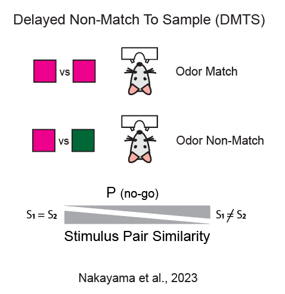

Artificial Stimulation and Perception
Measurement of perceptual distances in Mice
My research asks a simple but fundamental question: how does neural activity give rise to sensory perception, such as sounds and smells?
Perception of the external world emerges from complex and dynamic patterns of neuronal activity that evolve across multiple dimensions in space and time. To uncover the causal links between neural activity and perception, it is necessary to manipulate sensory inputs while measuring the resulting changes in perceptual decisions. My goal is to identify, during behavior, the spatiotemporal features of brain activity that generate natural sensory representations and to directly compare them with artificial patterns of neural activity created using optogenetics. By doing so, I test—at high throughput level—whether artificial activity introduced into sensory circuits can mimic the structure, dynamics, and perceptual meaning of signals naturally evoked by sensory stimuli.
This work has implications for sensory prosthetics, neural decoding, and the broader question of how the brain constructs perception.

To directly compare artificial patterns of neural activity with natural sensory stimuli, I further developed a high-throughput behavioral paradigm that measures perceptual distances between stimuli in mice (Nakayama et al., 2022, Cell Reports). In this delayed match-to-sample task, mice learn to report whether two sequentially presented odorants are the same or different. Perceptual distance between odor pairs is quantified based on performance in non-match trials, providing a behavioral metric of sensory similarity.  I extended this paradigm to compare artificially generated patterns of neural activity with natural odor-evoked representations within the same behavioral sessions. This extension allows stable and independent assessment of perceptual judgments for both natural and artificial stimuli, enabling direct comparison between the two.

In the same sessions, mice were able to discriminate the similarity of natural odors and evaluate the perceptual distance of artificially induced neural sequences. This demonstrates that animals generalized the decision rule learned with odorants to artificial spatiotemporal patterns, treating them as meaningful sensory inputs rather than novel or irrelevant signals. To test the limits of this paradigm, animals were also challenged to discriminate single activation spots approximately the size of a single glomerulus. Even under these minimal conditions, mice maintained high performance on natural odors and were able to discriminate certain pairs of light spots, demonstrating the sensitivity and resolution of the behavioral paradigm without requiring additional extensive training.
Theme2
...